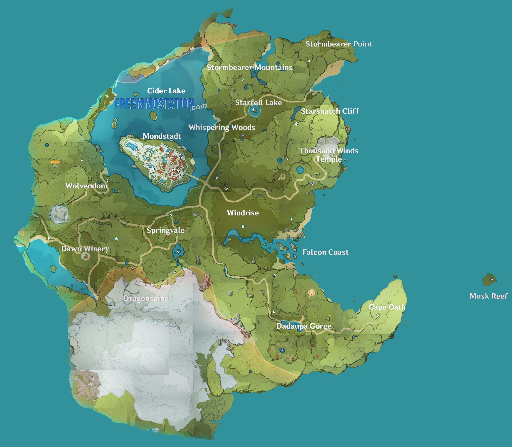

Um pouco sobre o jogo:
Postado em 30/10/2020 - 3 comentários
Genshin Impact é um jogo RPG de ação em mundo aberto, gratuito em todas as plataformas aonde é disponibilizado. O jogo se tornou famoso por ter algumas características parecidas com o jogo de Nintendo Switch The legend of Zelda: The Breath of the Wild. Apesar disso, podemos dizer com tranquilidade que o jogo tem muito mais características originais que fazem com que os jogadores tenham uma experiência única de gameplay. Como um viajante de outro mundo, você embarcará em uma jornada para se reunir com seu irmão há muito perdido e desvendar os mistérios de Teyvat e de você mesmo. Voe pelo mundo aberto, nade em águas cristalinas e escale montanhas altas. Saia do caminho comum para descobrir todos os segredos ocultos de um mundo cheio de maravilhas e mistérios.
Um pouco sobre o começo do jogo:
A história começa quando um casal de irmão, Aether e Lumine, estão viajando entre mundos quando são parados por uma Deusa desconhecida, que declara que os humanos estão indo longe demais, com isso, o jogo nos faz escolher qual dos dois será nosso personagem, após sua escolha, a Deusa desconhecida desaparece com o irmão não-escolhido e logo depois te lança para um mundo aleatório, o Teyvat. Após um tempo, você conhece uma pequena criatura chamada Paimon, que aparenta ser uma pequena fada, que se junta à você, fazendo com que o jogo comece, com Paimon dando intruções ao jogador, como andar, pular, atacar monstros, etc. Com o tempo nos deparamos com a primeira humana daquele mundo, Amber, que te leva à cidade de Mondstadt. Não contarei mais nada à seguir para não estragar a gameplay de ninguém. Abaixo você poderá ver o mapa de Teyvat, ou melhor dizendo, as parte que temos acesso no momento, visto que o jogo pretende lançar mais áreas exploráveis com o tempo.



Comentários
Alguém me ajuda a matar um boss?
Se tiver alguém rank 30 pra cima,
já sabemos que não tem vida fora do computador.
Gastei uma boa grana no jogo e agora tenho todos
os personagens :D